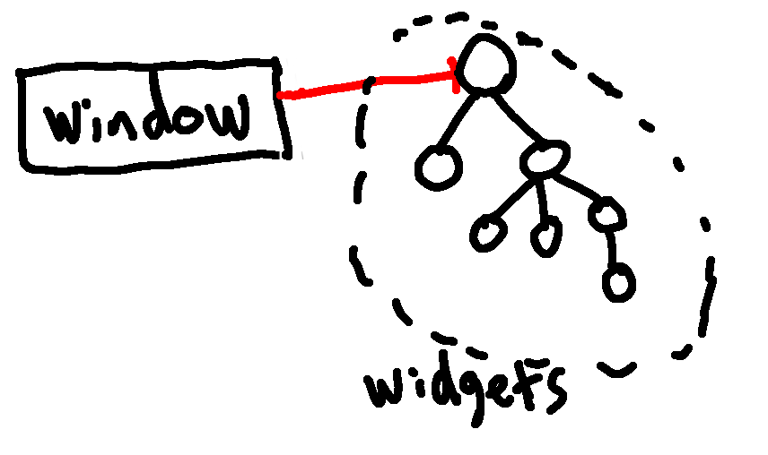

Hazey: Designing a GUI Builder
- Introduction
- Phase 1: Windows and Widgets
- Phase 2: Building Specific Widgets and Adding Responsiveness
- Phase 3: Publisher-Subscriber Event Management and Optimization
Introduction
Many times in my programming career I have wanted to create a simple GUI for running an application I coded. In these cases, I have tried out things like HTML with PHP and wxWidgets but I never really liked these options. In this blog post I thought it would be fun to create my own simple library for building GUIs based on OpenGL with very minimal external dependencies. The aim is to make something efficient and easy to expand. I want GUI elements to only update when necessary to make the overhead as small as possible. I came up with the name and logo "Hazey" by putting my last name Hazelden in a brand name generator.
Rapid Development Approach
As an experiment, I am going to try use the "rapid development" approach for designing this software. I will implement this by working in phases of "prototype, build, demonstrate, and refine." I will organize this blog post into each phase.
Phase 1: Windows and Widgets
Prototype
In this phase, I want to implement the basic functionality including window management with support for multiple windows, a generic widget class, and functionality for rendering and transforming widgets.
Build
I decided to implement the basic UI features by having a Window class and a Widget class. The Window class has a pointer to the root of a tree of Widgets. The tree is implemented by giving Widgets a list of children which are Widget pointers. The reason why I used a tree is because it makes transforming easier. For example, if we have two sliders insider a bigger Widget and we scale and translate the bigger Widget, these transformations should also be applied to the sliders. I think having a tree may also help with responsiveness later along the line.

One final detail I added was allowing Widgets to set their positioning to fixed or relative. In the latter case the inherit their parents' transformation and in the former they do not. I am trying to explicitly mimic how HTML implements this kind of thing.
Rendering of the Widgets is handled through a call to the window render function. This in turn calls render on the root Widget node. Each Widget contains a 2D modifiable texture representing the graphical output of the Widget. The Widget render function first renders the texture and then call render on all of its children.
Demonstrate
Below is a demonstration of the first phase. I created three windows with different widgets. One contains a single widget black ellipse, one contains a widget with the logo above, and the final window has two widgets: one for the border outline and a sub-widget representing a slider that is moving back and forth based on time.
Refine
This phase implemented the most basic functionality to get started. There are many refinements that will be done in future. These include making the scaling and transforming possible while in the application, implementing specific Widget types using polymorphism or composition, adding functionality for more easily interacting with Widgets and creating custom ones, etc.
Phase 2: Building Specific Widgets
Prototype
In this phase, I want to design some specific widgets such as sliders, buttons, text boxes, etc. This will first require some work to make creation of widgets in the current code easier and to support custom widgets through a mechanism such as polymorphism or composition. Another thing I will need to think about is how to build in responsiveness. I think this will be done through callback functions.
Build
I created slider, group, colorbar, and drawing widgets. To make these widgets responsive, I made it so that widgets have a callback which handles inputs such as mouse and keyboard. Each widget checks for a mouse click inside of its region and will update accordingly. The inputs are handled hierarchically like rendering.
Demonstrate
Below is a video demonstrating the new basic widgets. The slider and color selector control the pen width and color, respectively.
Refine
Some redundancy was introduced in this pass. In particular, each widget does an in bounds check. In the future, it makes more sense for a class up the food chain to handle collisions and delegate to the particular widgets that are effected. I think all of this will eventually be framed in the sense of an event-based paradigm: events will trigger certain widgets to handle the inputs. Furthermore, widgets will be able to send events like "button click" events and other widgets will be able to listen for the event. I will likely use something similar to the publisher-subscriber paradigm.